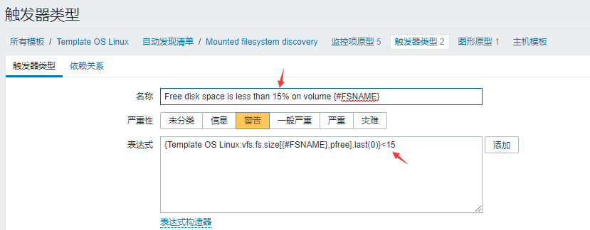
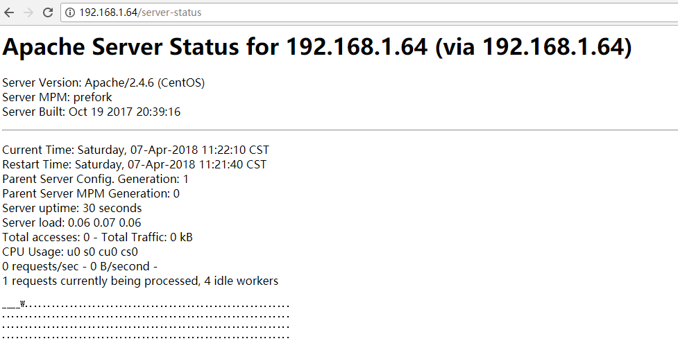

1. zabbix源码搭建
环境：LNMP+zabbix3.4
整个环境所需要的软件包
php-5.6.13
libmcrypt-2.5.8
mysql-5.6.26
nginx-1.8.0
zabbix-3.4.3
- 创建导入zabbix数据库
[root\@lewis63 ~]# mysql -uroot -p
mysql> create database zabbix;
mysql> create database zabbix;
mysql> flush privileges;
[root\@lewis63 ~]# tar zxf zabbix-3.4.3.tar.gz -C /usr/local/src/
[root\@lewis63 ~]# cd /usr/local/src/zabbix-3.4.3/
导入数据库，注意顺序，否则会报错
[root\@lewis63 zabbix-3.4.3]# mysql -uzabbix -pzabbix zabbix \< database/mysql/schema.sql
[root\@lewis63 zabbix-3.4.3]# mysql -uzabbix -pzabbix zabbix \< database/mysql/images.sql
[root\@lewis63 zabbix-3.4.3]# mysql -uzabbix -pzabbix zabbix \< database/mysql/data.sql
- 编译zabbix
[root\@lewis63 ~]# groupadd zabbix
[root\@lewis63 ~]# useradd -s /sbin/nologin -g zabbix zabbix #创建用户
解决依赖
yum install -y net-snmp-devel
yum install -y libevent libevent-devel
[root\@lewis63 zabbix-3.4.3]# ./configure --prefix=/usr/local/zabbix --enable-server --enable-agent --with-mysql=/var/lib/mysql/bin/mysql_config --with-net-snmp --with-libcurl参数说明:
--prefix= #指定路径
--enable-server #Server 支持
--enable-agent #支持 Zabbix 客户端
--with-mysql #指定 MySql 库可以选择自定路径 mysql_config，mysql_config 是命令，用于编译 mysql 客户端程序
--with-net-snmp #支持 snmp 协议，需要安装 net-snmp-devel 包
--with-libcurl #支持 CURL 功能，libcurl 主要功能就是用不同的协议连接不同的服务器，
libcurl 当前支持的协议有 http，https，ftp，gopher，telent，dict，file，和 ldap 协议
其他参数：
--enable-proxy 指的是支持 zabbix 代理服务器，zabbix proxy 是一个监控代理服务器，它收集到监控数据，选存放在缓冲区，保存的时间可以通过配置文件设定，然后再传送的 zabbix server。监控代理服务需要一个独立的数据库。
用 zabbix proxy 的好处：进程监控，当监控的位置通信不便时，当通讯上千台设备的时候，使用 zabbix_proxy 可以简化维护分布式监控，降低 zabbix server 的负负载
***********************************************************
* Now run 'make install' *
* *
* Thank you for using Zabbix! *
#按上面的提示，没有 make 步骤，直接 make install
[root\@lewis63 zabbix-3.4.3]# make install
3.配置 zabbix Server
[root\@lewis63 ~]# vim /usr/local/zabbix/etc/zabbix_server.conf
DBHost=localhost #默认注释掉了，直接取消注释即可
DBName=zabbix #数据库用户，我们授权的用户也是zabbix
DBUser=zabbix #默认是 root，我们授权的用户是 zabbix
DBPassword=zabbix #密码我们授权的也是 zabbix
4.监控 Zabbix Server 本身
监控本身，意思是本身作为服务器之外，自己也做自己的客户端，也要使用agentd这个代理者 配置文件中，有 agentd 和 agent 两个配置文件，前者是守护进程，后者依赖 xinetd
[root\@lewis63 ~]# vim /usr/local/zabbix/etc/zabbix_agentd.conf
Server=127.0.0.1 #默认监控服务器自己，这三行不用改
ServerActive=127.0.0.1
Hostname=Zabbix server
UnsafeUserParameters=1 #允许所有的字符是在用户定义的参数，参数传递，也就是支持自定义脚本
其中 Server 和 ServerActive 都指定 zabbixserver 的 IP 地址，不同的是，前者是被动后者是主动。也就是说前者允许 127.0.0.1 这个 ip 来我这取数据。而 serverActive 的 127.0.0.1 的意思是，客户端主动提交数据给他
5.启动服务
直接运行
[root\@lewis63 ~]# /usr/local/zabbix/sbin/zabbix_server
/usr/local/zabbix/sbin/zabbix_server: error while loading shared libraries: libmysqlclient.so.18: cannot open shared object file: No such file or directory
报错解决
[root\@lewis63 ~]# vim /etc/ld.so.conf #解决库文件找不到
include ld.so.conf.d/*.conf
/usr/local/mysql/lib/ #根据实际路径添加此行
[root\@lewis63 ~]# ldconfig #使库文件生效
[root\@lewis63 ~]# echo /usr/local/zabbix/sbin/zabbix_server >> /etc/rc.local #开机启动
[root\@lewis63 ~]# /usr/local/zabbix/sbin/zabbix_server
[root\@lewis63 ~]# netstat -anput | grep zabbix_server
tcp 0 0 0.0.0.0:10051 0.0.0.0:* LISTEN 55457/zabbix_server
#server 运行端口 10051
6. 编辑 php 页面控制文件
默认配置文件没有写入到我们的 Nginx 的配置文件中，也就是不能加载到我们的 zabbix 页面目录
[root\@lewis63 ~]# cp -r /usr/local/src/zabbix-3.4.3/frontends/php/* /usr/local/nginx/html/
[root\@lewis63 ~]# vim /usr/local/nginx/conf/nginx.conf
location / {
root html;
index index.php index.html index.htm; #找到此行内容，添加index.php
}
重启nginx服务和php-fpm服务
[root\@lewis63 ~]# nginx -s reload
[root\@lewis63 ~]# /etc/init.d/zabbix_server restart
[root\@lewis63 ~]# /etc/init.d/php-fpm restart
- 打开网页安装 zabbix web
打开浏览器输入http://192.168.1.63

开始检查环境

编辑 php.ini 文件，修改环境
[root\@lewis63 ~]# vim /usr/local/php/php.ini
post_max_size = 16M #修改
max_execution_time = 300 #修改
max_input_time = 300 #修改
date.timezone = Asia/Shanghai #此行有注释，去注释并修改
always_populate_raw_post_data = -1 #此行取消注释即可
mysqli.default_socket = /var/lib/mysql/mysql.sock #指定php连接mysql的sock路径
[root\@lewis63 ~]# /etc/init.d/php-fpm restart#重启fpm
刷新页面
如果提示没有安装PHP LDAP模块，为了不影响后面的功能，现在把这个模块重新编译安装进去
[root\@lewis63 ~]# cd /usr/local/src/php-7.0.18/ext/ldap/
[root\@lewis63 ldap]# /usr/local/php/bin/phpize
Configuring for:
PHP Api Version: 20151012
Zend Module Api No: 20151012
Zend Extension Api No: 320151012
[root\@lewis63 ldap]# ./configure --with-php-config=/usr/local/php/bin/php-config --with-ldap
上面的过程会报错,提示缺少库文件
yum install openldap-devel openldap –y
[root\@lewis63 ~]# rsync -avz /usr/lib64/libldap* /usr/lib/
再次编译，即可通过
[root\@lewis63 ldap]# ./configure --with-php-config=/usr/local/php/bin/php-config --with-ldap
[root\@lewis63 ldap]# make && make install
[root\@lewis63 ldap]# vim /usr/local/php/php.ini
添加：extension=ldap.so
[root\@lewis63 ldap]# /etc/init.d/php-fpm restart
再次刷新即可

这里Database host 需要改为127.0.0.1

下载这个配置文件上传上去
[root\@lewis63 ~]# mv zabbix.conf.php /usr/local/nginx/html/conf
然后刷新
默认用户名和密码分别为 Admin，zabbix
点击右上角用户，然后选择语言
点击配置-主机 启用本主机（默认没有启动，点击后面红色的停用，则启用）
把zabbix_agent 也启动起来
[root\@lewis63 ~]# /usr/local/zabbix/sbin/zabbix_agentd
再次刷新页面，可以看到，agent状态已经正常

可以看到已经开始出图
7.图表字符乱码的解决办法
在window系统C:\Windows\Fonts找到一个ttf字体文件，
[root\@lewis63 ~]# cd /usr/local/nginx/html/fonts/
[root\@lewis63 ~]# mv DejaVuSans.ttf DejaVuSans.bak
[root\@lewis63 ~]# mv simli.ttf DejaVuSans.ttf #重命名成DejaVuSans.ttf
1.1. 二．配置监控远程主机
1.1.1. 2.1客户端安装配置
1.解决依赖：
[root\@lewis64 ~]# yum install -y curl curl-devel net-snmp net-snmp-devel perl-DBI
[root\@lewis64 ~]# useradd -M -s /sbin/nologin zabbix
[root\@lewis64 ~]# tar zxf zabbix-3.4.3.tar.gz -C /usr/local/src/
[root\@lewis64 ~]# cd /usr/local/src/zabbix-3.4.3/
[root\@lewis64 zabbix-3.4.3]# ./configure --prefix=/usr/local/zabbix --enable-agent
[root\@lewis64 zabbix-3.4.3]# make install
[root\@lewis64 ~]# cat /etc/services|grep zabbix
zabbix-agent 10050/tcp # Zabbix Agent
zabbix-agent 10050/udp # Zabbix Agent
zabbix-trapper 10051/tcp # Zabbix Trapper
zabbix-trapper 10051/udp # Zabbix Trapper
2.启动agent
[root\@lewis64 ~]# /usr/local/zabbix/sbin/zabbix_agentd
[root\@lewis64 ~]# cp /usr/local/src/zabbix-3.4.3/misc/init.d/fedora/core5/zabbix_agentd /etc/init.d/
[root\@lewis64 ~]# vim /etc/init.d/zabbix_agentd
ZABBIX_BIN="/usr/local/zabbix/sbin/zabbix_agentd" #修改此行
[root\@lewis64 ~]# chkconfig --add zabbix_agentd
[root\@lewis64 ~]# chkconfig zabbix_agentd on
- 配置 Agentd 的配置文件
[root\@lewis64 ~]# vim /usr/local/zabbix/etc/zabbix_agentd.conf
Server=192.168.1.63 #zabbix server 地址，可以多个，用，隔开
ServerActive=192.168.1.63 #主动检查的意思,主动检查主机的数据的数据发送给 Zabbix Server
Hostname=lewis64
UnsafeUserParameters=1
重启服务：[root\@lewis64 ~]# /etc/init.d/zabbix_agentd restart
[root\@lewis64 ~]# netstat -anput | grep zabbix
tcp 0 0 0.0.0.0:10050 0.0.0.0:* LISTEN 8544/zabbix_agentd
Server 端测试通讯
[root\@lewis63 ~]# /usr/local/zabbix/bin/zabbix_get -s 192.168.1.64 -p10050 -k system.uname
Linux lewis64 3.10.0-693.el7.x86_64 #1 SMP Tue Aug 22 21:09:27 UTC 2017 x86_64
#可以获取对方系统版本则证明没有问题
1.1.2. 2.2服务端添加 Host 主机

选择模板
点选择，选择Template OS Linux，点击两次添加
远程主机已经被添加进来，启用该主机，可用性变成绿色即可出图监控

1.1.3. 2.3添加监控项

筛选无触发器，出来很多监控项，默认都是启用状态，我们无需再次启动，下面修改自动发现的时间
文件系统探测和网络流量探测
把原来的1h改成10s
修改更新数据后，再次返回图形监控页面，稍等几分钟再次查看监控项
返回主页，可以看到整体的监控状态
1.1.4. 2.4设置 Triger 触发器值

默认的值是20%

修改成自己设定的值15%

1.1.5. 2.5更新数据
自定义绘图颜色，找到主机对应的模块---修改模板对应的图形颜色

根据需求修改每一个项的显示颜色

总结 zabbix 的文件
zabbix_agent.conf 是用超级服务（xinetd）的方式来启动的，被动检查，只有 Server 说检查的时候才检查
zabbix_agentd.conf 是以独立进程的方式来启动的，一般使用这个来做配置，自动检查，自动提交 zabbix_server.conf Server 启动配置文件，只有一个
zabbix_get 是 Zabbix 中的一个程序，用于 Zabbix-Server 到 Zabbix-Agent 的数据获取，通常可以用来 检测验证 Agent 的配置是否正确。它的使用方法如下
zabbix_get [-hV] -s \
-h：远程 Zabbix-Agent 的 IP 地址或者是主机名。
-p：远程 Zabbix-Agent 的端口。
-I：本机出去的 IP 地址，用于一台机器中有多个网卡的情况。
-k：获取远程 Zabbix-Agent 数据所使用的 Key。
[expmple\@~]# zabbix_get -s 192.168.0.64 -k system.uname
zabbix_sender 与 get 相反，用来发送 Zabbix 服务器处理性能数据。该工具通常用于长时间运行的用户脚 本，用于定期发送可用性和性能数据。使用方法如下
zabbix_sender [-Vhv] {[-zpsI] -ko | [-zpI] -T -i \
参数说明：
-c --config \
-z --zabbix-server \
-p --port \
-s --host \
ip 地址
-I --source-address \
-k --key \
-o --value \
-i --input-file \ 从文件里面读取 hostname、key、value 一行为一条数据，使用空格作为分
隔符，如果主机名带空格，那么请使用双引号包起来
-T --with-timestamps 一行一条数据，空格作为分隔符:
\
\
-r --real-time 将数据实时提交给服务器
-v --verbose 详细模式, -vv 更详细
1.2. 三．zabbix监控Apache服务
http://www.zabbix.org/wiki/Main_Page
https://github.com/zabbix/zabbix-community-repos
各种模板
http://www.douglas.wiki.br/doku.php?id=en:installing_and_configuring_zabbix
下载脚本wget https://github.com/lorf/zapache/archive/master.zip
1.2.1. 3.1启用apache 服务器状态，开启apache的server-status
[root\@lewis64 ~]# vim /etc/httpd/conf/httpd.conf 在末尾加入
ExtendedStatus On
\
SetHandler server-status
Order allow,deny
Allow from 127.0.0.1 192.168.1.0/24
\</location>
[root\@lewis64 ~]# systemctl restart httpd 重启后测试

[root\@lewis64 ~]# unzip zapache-master.zip
[root\@lewis64 ~]# cd zapache-master
[root\@lewis64 zapache-master]# ls
httpd-server-status.conf.sample userparameter_zapache.conf.sample zapache-template-active.xml
README.md zapache zapache-template.xml
说明：
httpd-server-status.conf.sample 是用于配置server-status的上个步骤已经配置过了
userparameter_zapache.conf.sample zapache 关键的文件
zapache-template-active.xml zapache-template.xml模板
1.2.2. 3.2将解压出来的几个文件放到相应目录
[root\@lewis64 zapache-master]# cp zapache /usr/local/bin/
[root\@lewis64 zapache-master]# cp userparameter_zapache.conf.sample /usr/local/zabbix/etc/zabbix_agentd.conf.d/
[root\@lewis64 zapache-master]# cd !$
[root\@lewis64 zabbix_agentd.conf.d]# mv userparameter_zapache.conf.sample userparameter_zapache.conf #重命名
UserParameter=zapache[*],/var/lib/zabbixsrv/externalscripts/zapache \$1
改为UserParameter=zapache[*],/usr/local/bin/zapache \$1
[root\@lewis64 ~]# chmod +x /usr/local/bin/zapache
1.2.3. 3.3修改zabbix -agentd.conf
[root\@lewis64 ~]# vim /usr/local/zabbix/etc/zabbix_agentd.conf
Include=/usr/local/zabbix/etc/zabbix_agentd.conf.d/ #启用引用此目录文件
1.2.4. 3.4前端页面操作
导入模板
选择配置->模板 导入

关联模板
配置->主机 选择lewis64 apache客户端

查看最新数据，筛选Apache，可以选择生产图形

1.3. 四．配置 zabbix 监控 MySQL
和监控我们的 Apache 一样，寻找合适的脚本，不过，脚本并不是那么容易就可以找得到的! 要么自己手动去写，要么自己找到的拿来修改，都是需要花费代价的！ZABBIX 默认提供了 MYSQL 的监控模板
数据库用户授权
mysql> grant usage on *.* to zabbix\@'%' identified by '123456';
mysql> flush privileges;
[root\@lewis64 ~]# cp /usr/local/src/zabbix-3.4.3/conf/zabbix_agentd/userparameter_mysql.conf /usr/local/zabbix/etc/zabbix_agentd.conf.d/
[root\@lewis64 ~]# vim /usr/local/zabbix/etc/zabbix_agentd.conf
Include=/usr/local/zabbix/etc/zabbix_agentd.conf.d/*.conf #启用并修改
建立数据库和 zabbix 的链接信息
[root\@lewis64 ~]# vim /usr/local/zabbix/etc/.my.cnf
#Zabbix Agent
[mysql]
host=lewis63
user=zabbix
password=123456
socket= /var/lib/mysql/mysql.sock
[mysqladmin]
host=lewis63
user=zabbix
password=123456
socket= /var/lib/mysql/mysql.sock
[root\@lewis64 ~]# vim /usr/local/zabbix/etc/zabbix_agentd.conf.d/userparameter_mysql.conf
将 HOME=/var/lib/zabbix 全部改成 HOME=/usr/local/zabbix/etc/
# For all the following commands HOME should be set to the directory that has .my.cnf file with password information.（提示目录下必须有.my.cnf）
模板应用主机
选择配置->主机->选择模板


1.4. 五．Zabbix邮件报警配置
第一步：首先安装mailx组件并配置好能够通过三方邮箱发送邮件
[root\@lewis63 ~]# yum -y install mailx
然后编辑mailx的配置文件
[root\@lewis63 ~]# vim /etc/mail.rc
set from=xiaokai0312\@163.com
set smtp=smtp.163.com
set smtp-auth-user=xiaokai0312\@163.com
set smtp-auth-password=你的授权码
set smtp-auth=login
保存退出后测试邮件是否能够正常发送出去
[root\@lewis63 ~]# echo "zabbix test mail" |mailx -s "zabbix" xxxxxx@qq.com
在zabbix服务端写邮件发送脚本
[root\@lewis63 ~]# cd /usr/local/zabbix/share/zabbix/alertscripts/
[root\@lewis63 alertscripts]# vim sendmail.sh
#!/bin/bash
messages=`echo $3 | tr '\r\n' '\n'`
subject=`echo $2 | tr '\r\n' '\n'`
echo "${messages}" | mailx -s "${subject}" $1 >>/tmp/sendmail.log 2>&1
[root\@lewis63 alertscripts]# chown zabbix.zabbix sendmail.sh
[root\@lewis63 alertscripts]# chmod +x sendmail.sh
修改主配置文件，让服务读取到这个脚本
[root\@lewis63 ~]# vim /usr/local/zabbix/etc/zabbix_server.conf
修改：
# AlertScriptsPath=${datadir}/zabbix/alertscripts
为
AlertScriptsPath=/usr/local/zabbix/share/zabbix/alertscripts
[root\@lewis63 ~]# /usr/local/zabbix/share/zabbix/alertscripts/sendmail.sh xxxx\@qq.com "测试标题" "测试邮件内容"
[root\@lewis63 ~]# chmod 777 /tmp/sendmail.log
页面添加
管理->报警媒介类型->创建媒体类型

{ALERT.SENDTO}
{ALERT.SUBJECT}
{ALERT.MESSAGE}
很多人安装zabbix 3.0之后，写的脚本一直发信不成功,手动执行时可以的。
这是因为zabbix3.0之后，可以自定义参数了。所以不写参数，它是不会传参数的。
在2.x版本不存在这个问题，默认会传3个参数
点管理->用户->点击Admin->再点报警媒介->添加

配置->动作->创建动作
名称：Action-Email
操作：
默认接收人：故障{TRIGGER.STATUS},服务器:{HOSTNAME1}发生: {TRIGGER.NAME}故障!
默认信息：
告警主机:{HOSTNAME1}
告警时间:{EVENT.DATE} {EVENT.TIME}
告警等级:{TRIGGER.SEVERITY}
告警信息: {TRIGGER.NAME}
告警项目:{TRIGGER.KEY1}
问题详情:{ITEM.NAME}:{ITEM.VALUE}
当前状态:{TRIGGER.STATUS}:{ITEM.VALUE1}
事件 ID:{EVENT.ID}
恢复操作
默认接收人：已恢复！{TRIGGER.STATUS}, 服务器:{HOSTNAME1}: {TRIGGER.NAME}
恢复信息：
告警主机:{HOSTNAME1}
告警时间:{EVENT.DATE} {EVENT.TIME}
告警等级:{TRIGGER.SEVERITY}
告警信息: {TRIGGER.NAME}
告警项目:{TRIGGER.KEY1}
问题详情:{ITEM.NAME}:{ITEM.VALUE}
当前状态:{TRIGGER.STATUS}:{ITEM.VALUE1}
事件 ID:{EVENT.ID}

测试，关闭 zabbix 客户端服务 zabbix_agentd
[root\@lewis64 ~]# /etc/init.d/zabbix_agentd stop
延迟比较大，大概要5-10分钟
可以在日志看送达状态，qq邮箱微信(绑定qq邮箱)同时收到告警

配置 zabbix 自动发现并监控（监控Ｗｉｎｄｏｗｓ为案例）
首先下载安装Ｗｉｎｄｏｗｓ端ａｇｅｎｔ
https://www.zabbix.com/downloads/3.4.6/zabbix_agents_3.4.6.win.zip
找到conf下的配置文件 zabbix_agentd.win.conf (建议用文本编辑软件打开)，修改LogFile、Server、ServerActive、Hostname这四个参数。具体配置如下：
LogFile=c:\zabbix_agentd.log
Server=192.168.1.63
Hostname=iqsz-l0001
ServerActive=192.168.1.63 #zabbix server地址
其中logfile是zabbix日志存放地址。Server 是zabbix服务端ip地址。Hostname是本机机器名。
以管理员身份运行切换至agent存放位置，比如D:\zabbix_agent\bin\win64，否则会报错

安装windos zabbix客户端
zabbix_agentd.exe -c D:\zabbix_agent\conf\zabbix_agentd.win.conf –i

启动客户端
zabbix_agentd.exe -c D:\zabbix_agent\conf\zabbix_agentd.win.conf –s
创建自动发现规则
配置->自动发现->创建发现规则
添加关联动作
操作-可添加发现主机发送邮件通知
发送模版
默认接收人自动发现主机: {DISCOVERY.DEVICE.STATUS} {DISCOVERY.DEVICE.IPADDRESS}
默认信息
发现规则: {DISCOVERY.RULE.NAME}
设备IP:{DISCOVERY.DEVICE.IPADDRESS}
设备DNS: {DISCOVERY.DEVICE.DNS}
设备状态: {DISCOVERY.DEVICE.STATUS}
设备运行时间: {DISCOVERY.DEVICE.UPTIME}
设备服务端口: {DISCOVERY.SERVICE.NAME}